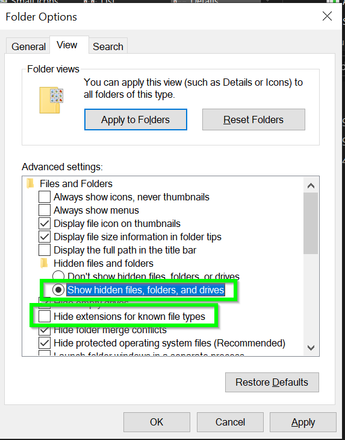
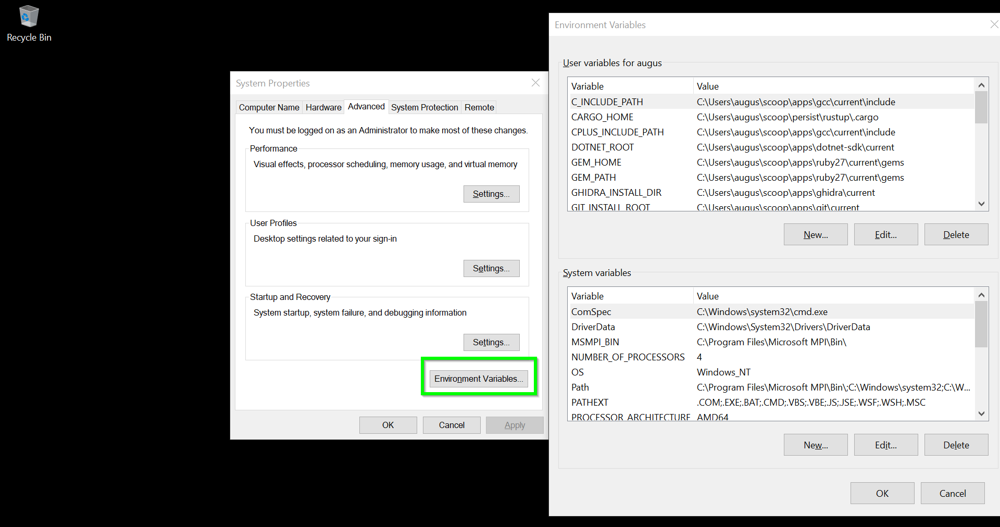

Intro a MS Windows para Pythonistas
![]()
Motivación
- Educación: Ayudar a quienes están aprendiendo
- Trabajo: Pruebas Automáticas e Integración Continua
Esta charla es para vos si:
- Estás dando tus primeros pasos con la Línea de Comandos
- Estás viendo una pesadilla de GNU/Stallman
Warning
Todo lo que sigue es mi opinión basada en mi experiencia de desarrollo. Seguramente hay mejores formas de hacerlo, y si conocés alguna compartilo.
Entendiendo Windows

Uso de la consola
Por default Windows tiene cmd y Windows PowerShell y en las últimas versiones ya incluye PowerShell Core.
Caution
En esta charla vamos a usar PowerShell Core. Para más detalles ver PowerShell
PowerShell es como un REPL que tiene pipes
y donde todo es un Objeto.
File System
Cada Unidad (drive) corresponde a un disco duro y son nombradas con una letra, por ejemplo: C:\. Y cada unidad es independiente del resto.
La ruta de un archivo se ve así:
C:\un\archivo\dentro\de\muchas\carpetas\fin.csv
Warning
En Windows las rutas de los archivos usan \ (backward slash) a diferencia de / (forward slash) en otros sistemas.
Para inspeccionar todas las unidades:
> Get-PSDrive
Name Used (GB) Free (GB) Provider Root CurrentLocation
---- --------- --------- -------- ---- ---------------
Alias Alias
C 135.43 60.89 FileSystem C:\
Cert Certificate \
D 14.15 10.85 FileSystem D:\
Env Environment
Function Function
HKCU Registry HKEY_CURRENT_USER
HKLM Registry HKEY_LOCAL_MACHINE
Temp 135.43 60.89 FileSystem C:\Users\augus\AppData\Local\Temp\
Variable Variable
WSMan WSManVariables de Ambiente
En PowerShell las variables se pueden acceder por la unidad virtual (virtual drive) variable: (algo similar al locals() de python) y las variables de ambiente en env:
Podemos inspeccionar el contenido con: ls env:
o modificarlas con
$env:MI_VARIABLE_DE_SALUDO="HOLA UNaHur!"
Important
Cada proceso hereda las variables de ambiente del proceso que lo originó (parent). De manera que hay que reiniciar un programa para que tome un cambio en una variable de ambiente.
Algunos comandos útiles
get-helpget-commandget-alias
Cómo instalar cosas
- chocolatey
- winget
- scoop
Note
scoop es un instalador de programas que se utiliza por la línea de comandos, similar a apt-get o homebrew. Nos permite instalar herramientas de la línea de comandos (CLI) como también programas que tienen interfaz gráfica (GUI).
Más detalles sobre scoop acá
Ahora sí, un poco de Python
Veamos un par de cosas que causan dolores de cabeza y es muy común encontrarlas.
Obtengamos todos los comandos que inician con python
CommandType Name Version Source
----------- ---- ------- ------
Application python.exe 3.10.1115… C:\Users\augus\AppData\Local\Programs\Python\Python31…
Application python.exe 3.12.2150… C:\Users\augus\scoop\apps\python\current\python.exe
Application python.exe 0.0.0.0 C:\Users\augus\scoop\shims\python.exe
Application python.exe 0.0.0.0 C:\Users\augus\AppData\Local\Microsoft\WindowsApps\py…
Application python3.exe 0.0.0.0 C:\Users\augus\scoop\shims\python3.exe
Application python3.exe 0.0.0.0 C:\Users\augus\AppData\Local\Microsoft\WindowsApps\py…
Application pythontex.exe 0.0.0.0 C:\Users\augus\scoop\apps\miktex\current\texmfs\insta…
Application pythonw.exe 3.10.1115… C:\Users\augus\AppData\Local\Programs\Python\Python31…
Application pythonw.exe 3.12.2150… C:\Users\augus\scoop\apps\python\current\pythonw.exe
Application pythonw.exe 0.0.0.0 C:\Users\augus\scoop\shims\pythonw.exeY ahora? cuál de todos uso?
Ambientes virtuales
REGLA DE HIGIENE DE LA VIVORA DE ORO1
Siempre trabajar en un Ambiente Virtual.
Para crear un ambiente virtual, elegimos cualquiera ejecutable de python, de la versión que querramos, y creamos un ambiente virtual con venv
Y verificamos que vamos a usar el ejecutable correcto
Instalamos paquetes
Usando IPython como REPL o consola interactiva
Rutas de archivos (paths)
REGLA DE INTEROPERABILIDAD:
Nunca definir rutas de directorios o archivos como strings, siempre usar pathlib.
Tip
Una buena forma de poner a prueba la interoperabilidad de nuestro código es implementando Pruebas Automáticas o Tests y ejecutarlos en un sistema de Integración Continua (CI/CD) como GitHub Actions
Otras librerías estandar para explorar1
Windows Subsystem for Linux (WSL)
WSL nos permite tener distribuciones de Linux dentro de nuestro sistema Windows. Integrado de manera nativa de manera que tenemos acceso a recursos como los archivos, dispositivos, red, etc …
Cómo instalar distintas distribuciones
Para listar las distribuciones disponibles para instalar:
Compartir variables de ambiente
Para
WSLENV=:Variable/u:Variable/pPaths
Tip
Dentro de WSL existe wslpath que permite traducir los paths de Windows a WSL y viceversa.
Los discos de Windows están ubicados dentro de /mnt
Por ejemplo C:/Users se encuentra en /mnt/c/Users
Important
Cuando instalen una distribución aseguren que está en la versión 2 de WSL
Gracias!!
Warning
Les dejo muchas cosas para explorar en las diapositivas que siguen
Extras
Más info sobre Scoop
La forma más sencilla de encontar algo es buscándolo directamente en http://scoop.sh
Utilidades de la Línea de Comandos
Tip
Para explorar paquetes scoop info paquete y scoop home paquete
- pwsh
- uutils-coreutils
- msys2
- starship
Utilidades Gráficas
Tip
Para agregar el repositorio o bucket de aplicaciones scoop bucket add extras
- powertoys
- windows-terminal
- greenshot
Utilidades para Inspeccionar el Sistema
Tip
Para agregar el repositorio de aplicaciones de Sistema scoop bucket add sysinternals
- zoomit
- process-explorer
- windirstat
Otras versiones de un programa
En el bucket versions se guardan las versiones historicas de los paquetes de manera que nos permite instalar cualquier versión de manera sencilla. Por ejemplo para python
> scoop search python
Name Version Source Binaries
---- ------- ------ --------
python 3.13.0 main
winpython 3.12.4.1 main
anaconda3 2024.10-1 extras python.exe | pythonw.exe | python.exe
fontforge 20230101 extras ffpython.exe
mambaforge 24.9.0-0 extras python.exe | pythonw.exe | python.exe
miniconda3 24.9.2-0 extras python.exe | pythonw.exe | python.exe
paraview 5.13.0 extras pvpython.exe
anaconda2 2019.10 versions python.exe | pythonw.exe | python.exe
anaconda3-2022.05 2022.05 versions python.exe | pythonw.exe | python.exe
miniconda2 4.8.3 versions python.exe | pythonw.exe | python.exe
miniconda3-4.12.0 4.12.0 versions python.exe | pythonw.exe | python.exe
miniconda3-py310 24.9.2-0 versions python.exe | pythonw.exe | python.exe
miniconda3-py311 24.9.2-0 versions python.exe | pythonw.exe | python.exe
miniconda3-py37 23.1.0-1 versions python.exe | pythonw.exe | python.exe
miniconda3-py38 23.11.0-2 versions python.exe | pythonw.exe | python.exe
miniconda3-py39 24.9.2-0 versions python.exe | pythonw.exe | python.exe
python-alpha 3.14.0a1 versions
python-beta 3.14.0a1 versions
python-pre 3.14.0a1 versions
python-rc 3.13.0rc3 versions
python27 2.7.18 versions
python310 3.10.11 versions
python311 3.11.9 versions
python312 3.12.7 versions
python35 3.5.4 versions
python36 3.6.8 versions
python37 3.7.9 versions
python38 3.8.10 versions
python39 3.9.13 versions
winpython37 3.7.7.1 versions
winpython3741 3.7.4.1 versions
winpython37cod 3.7.7.1 versions
winpython37ps2 3.7.6.0 versions
winpython38 3.8.9.0 versions
winpython38cod 3.8.7.0 versions
winpython38ps2 3.8.1.0 versions Docker
Warning
Para instalar Docker Desktop lo mejor es hacerlo con winget (si no está instalado lo pueden instalar con scoop)
Powershell
Para saber que versión de PowerShell tenemos
Para configurar el perfil de PowerShell hay que modificar el archivo $Profile, más info en la documentación oficial
Pueden explorar la configuración del módulo PSReadline de PowerShell para tener mejor auto-completado entre otras cosas.
Manejo de Ambientes Virtuales de Python
Para el 90% de los casos con venv de la librería estandar es suficiente.
Pero si en nuestro proyecto tenemos que usar alguna librería que tiene artefactos o dependencias compiladas lo mejor es usar conda.
Info extra de Pip
La forma más fácil de encontrar los archivos de configuración de pip
> python -m pip config -v list
For variant 'global', will try loading 'C:\ProgramData\pip\pip.ini'
For variant 'user', will try loading 'C:\Users\augus\pip\pip.ini'
For variant 'user', will try loading 'C:\Users\augus\AppData\Roaming\pip\pip.ini'
For variant 'site', will try loading 'C:\temp\z\.venv\pip.ini'Documentación de dónde estan los archivos de configuración de pip
Configuraciones
CRLF
Cuando uno trabaja en un repositorio en el cual otras personas usan otro sitema operativo como Linux o MacOS, la forma en que terminan las líneas (EOL) puede incurrir en cambios espureos en cada commit.
Paths muy largos
Windows por defecto tiene un limite en la longitud del completo de un archivo (FullName) y en algunos casos eso puede causar errores. Como impedir que un repositorio se pueda clonar o crear algún archivo nuevo.
Persistir Variables de Ambiente
Buscar “Environment Variable” en el menú de inicio de Windows
O en la consola …
> [System.Environment]::SetEnvironmentVariable("MI_VARIABLE", "HOLA WINDOWS", [System.EnvironmentVariableTarget]::User)La notación extraña de corchetes la usamos porque desde PowerShell estamos accediendo a los namespaces o módulos del Sistema que están implementados en C#
🐍 PyDay Hurlingham 2024